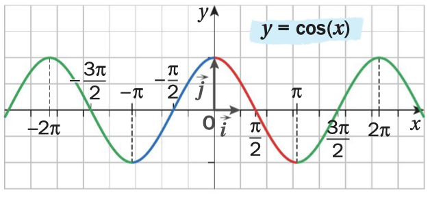
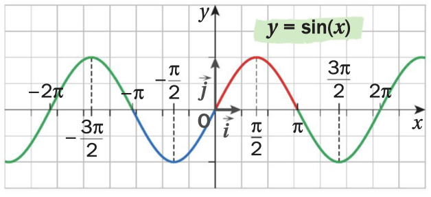
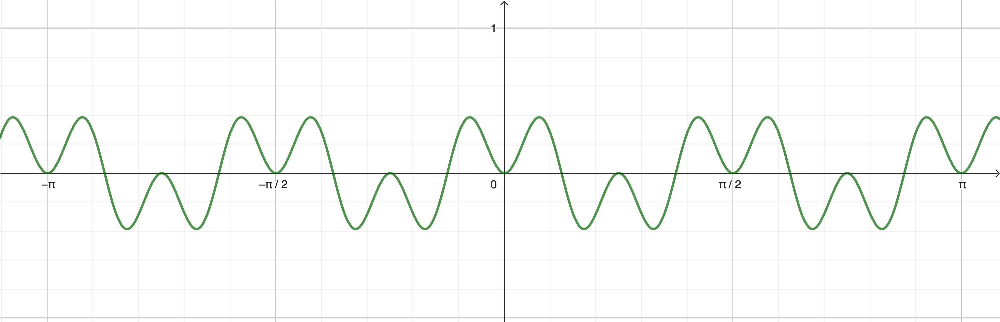

Trigonométrie
1 Parité et périodicité d’une fonction
Soit f une fonction définie sur un intervalle I de \mathbb{R} et {C_f} sa courbe représentative dans un repère orthogonal (O,\vec{i},\vec{j}) du plan.
La fonction f est:
paire si pour tout x de I, -x appartient à I et f(-x)=f(x).
Sa courbe représentative {C_f} est alors symétrique par rapport à l’axe des ordonnées.impaire si pour tout x de I, -x appartient à I et f(-x)= - f(x).
Sa courbe représentative {C_f} est alors symétrique par rapport à l’origine O du repère.périodique de période T (T réel non nul), si pour tout x de I, x+T appartient à I et f(x+T)=f(x).
Sa courbe représentative {C_f} est alors invariante par translation de vecteur T\overrightarrow{i} ou - T\overrightarrow{i}.
La fonction cosinus est paire et 2\pi-périodique.

La fonction sinus est impaire et 2\pi-périodique.

Soit f la fonction définie sur \mathbb{R} par f(x)=\cos(4x)\sin^2(4x) dont on donne la représentation graphique ci-dessous.

Conjecturer graphiquement la parité et la périodicité de f.
Démontrer ces conjectures.
La courbe représentative de f semble symétrique par rapport à l’axe des ordonnées, donc on conjecture que f est paire.
La courbe représentative de f semble invariante par translation de vecteurs \frac{\pi}{2}\overrightarrow{i} ou \frac{-\pi}{2}\overrightarrow{i}, donc on conjecture que f est \frac{\pi}{2}-périodique.Soit x \in \mathbb{R}, -x \in \mathbb{R} et
f(-x)=\cos(-4x)\sin^2(-4x)
f(-x)=\cos(4x)(-\sin(4x))^2 car la fonction cosinus est paire et la fonction sinus est impaire
f(-x)=\cos(4x)\sin^2(4x)
f(-x)=f(x)
donc f est paire.Soit x \in \mathbb{R}, x+\frac{\pi}{2} \in \mathbb{R} et
f(x+\frac{\pi}{2})=\cos(4(x+\frac{\pi}{2}))\sin^2(4(x+\frac{\pi}{2}))
f(x+\frac{\pi}{2})=\cos(4x+2\pi)\sin^2(4x+2\pi)
f(x+\frac{\pi}{2})=\cos(4x)\sin^2(4x) car les fonctions cosinus et sinus sont 2\pi-périodiques
f(x+\frac{\pi}{2})=f(x)
donc f est \frac{\pi}{2}-périodique.
2 Dérivation des fonctions cosinus et sinus
(admise)
Les fonctions cosinus et sinus sont dérivables sur \mathbb{R}.
La dérivée de la fonction x \mapsto \cos(x) est la fonction x \mapsto -\sin(x).
La dérivée de la fonction x \mapsto \sin(x) est la fonction x \mapsto \cos(x).
Déterminer la dérivée de chacune des fonctions suivantes.
Soit f la fonction définie sur \mathbb{R} par f(x)=\cos(x)\sin(x).
Soit g la fonction définie sur \mathbb{R} par g(x)=\cos^2(x).
Soit h la fonction définie sur \mathbb{R}\setminus \{\frac{\pi}{2}+k\pi, k\in \mathbb{Z}\} par h(x)=\tan(x)=\frac{\sin(x)}{\cos(x)}.
Soit f la fonction définie sur \mathbb{R} par f(x)=\cos(x)\sin(x).
Les fonctions cosinus et sinus sont dérivables sur \mathbb{R} donc, par produit, f est dérivable sur \mathbb{R}.
Soit x \in \mathbb{R}, f'(x)=-\sin(x)\sin(x)+\cos(x)\cos(x)=\cos^2(x)-\sin^2(x)Soit g la fonction définie sur \mathbb{R} par g(x)=\cos^2(x).
Les fonctions cosinus et carré sont dérivables sur \mathbb{R} donc, par composition, g est dérivable sur \mathbb{R}.
Soit x \in \mathbb{R}, g'(x)=2\cos(x)(-\sin(x))=-2\cos(x)\sin(x)Soit h la fonction définie sur \mathbb{R}\setminus \{\frac{\pi}{2}+k\pi, k\in \mathbb{Z}\} par h(x)=\tan(x)=\frac{\sin(x)}{\cos(x)}.
La fonction sinus est dérivable sur \mathbb{R} et la fonction cosinus est dérivable sur \mathbb{R} et s’annule en \frac{\pi}{2}+k\pi avec k \in \mathbb{Z} donc, par quotient, h est dérivable sur \mathbb{R}\setminus \{\frac{\pi}{2}+k\pi, k\in \mathbb{Z}\}.
Soit x \in \mathbb{R}\setminus \{\frac{\pi}{2}+k\pi, k\in \mathbb{Z}\}, h'(x)=\frac{\cos(x)\cos(x)-\sin(x)(-\sin(x))}{\cos^2(x)}=\frac{\cos^2(x)+\sin^2(x)}{\cos^2(x)}=\frac{1}{\cos^2(x)}
(admise)
Soit u une fonction dérivable sur un intervalle I de \mathbb{R}.
La fonction f définie sur I par f(x)=\cos(u(x)) est dérivable sur I et, pour tout x de I, f'(x)=-u'(x)\sin(u(x))
La fonction g définie sur I par g(x)=\sin(u(x)) est dérivable sur I et, pour tout x de I, g'(x)=u'(x)\cos(u(x))
Déterminer la dérivée de chacune des fonctions suivantes.
Soit f la fonction définie sur \mathbb{R} par f(x)=\cos(5x+1).
Soit g la fonction définie sur \mathbb{R} par g(x)=\sin(3x^2+5x-1).
Soit f la fonction définie sur \mathbb{R} par f(x)=\cos(5x+1).
x \mapsto 5x+1 est dérivable sur \mathbb{R}
La fonction cosinus est dérivable sur \mathbb{R}
Donc, par composition, f est dérivable sur \mathbb{R}.
Soit x \in \mathbb{R}, f'(x)=-5\sin(5x+1)Soit g la fonction définie sur \mathbb{R} par g(x)=\sin(3x^2+5x-1).
x \mapsto3x^2+5x-1 est dérivable sur \mathbb{R}
La fonction sinus est dérivable sur \mathbb{R}
Donc, par composition, g est dérivable sur \mathbb{R}.
Soit x \in \mathbb{R}, g'(x)=(6x+5)\cos(3x^2+5x-1)
3 Limites
Les fonctions sinus et cosinus n’ont pas de limite en +\infty et -\infty.
\lim\limits_{x \rightarrow 0} \dfrac{\sin(x)}{x}=1
Ce premier point est admis.
La fonction sinus est dérivable sur \mathbb{R} donc notamment en 0.
Soit x \in \mathbb{R}^*.
Le taux de variation de la fonction sinus entre 0 et 0+x est \frac{\sin(0+x)-\sin(0)}{x}=\frac{\sin(x)}{x}
Lorsque x tend vers 0, ce taux de variation tend vers le nombre dérivé de la fonction sinus en 0, c’est-à-dire \sin'(0)=\cos(0)=1.
Donc, \lim\limits_{x \to 0} \frac{\sin(x)}{x}=1